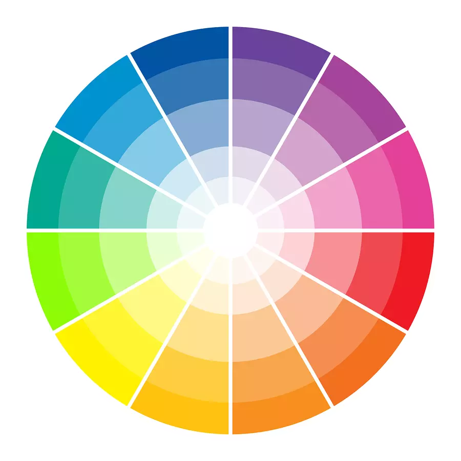

CSS EXTERNO
Estilo externo é uma tag link no head referenciando uma folha de estilo separada !
HARMONIA DE CORES
Cores primarias
Cores secundarias
Cores quentes
Cores frias
Circulo cromático

FERRAMENTAS
Adobe Color
Construir e utilizar paletas.
Paletton
Construir paletas e simular sites.
Coolors
Gerador de paletas.
<< Pagina Anterior
Próxima página >>